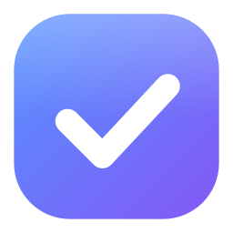
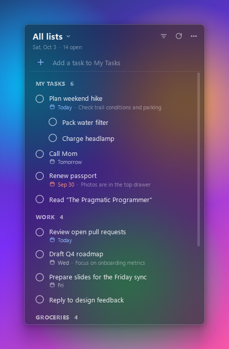
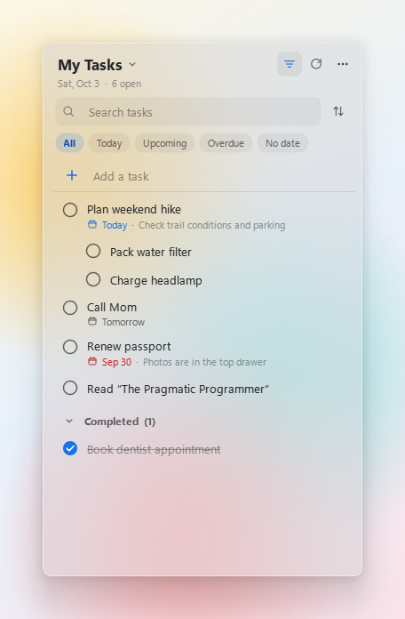

Your Google Tasks as a minimal glass widget on the Windows desktop. See, check off and add tasks without opening a browser.


Sits behind your windows and stays visible on Show desktop. Or pin it on top.
Frosted glass with dark, light and system themes keeps text clear on any wallpaper.
Complete, add, rename, schedule, add subtasks and notes. Syncs with Google Tasks right away.
All lists or one. Today, Upcoming, Overdue, No date. Search and sort.
About 60 MB of RAM, idle CPU at zero, works offline from an encrypted cache.
No backend, analytics or telemetry. The developers never see your data. Open source under MIT.
GTask Widget is only a desktop front end for Google Tasks. It has no backend and no servers. The developers never collect, receive, store or use any of your data.
When you click Connect Google account, the app asks Google for one permission:
to view and edit your Google Tasks (https://www.googleapis.com/auth/tasks).
It uses this only to show your tasks on your desktop and to save changes you make in the widget.
It does not access any other Google account data: no email address, profile, contacts, calendar or files.
The only things kept are on your own computer: your sign-in token and an offline copy of your tasks, both encrypted. Signing out deletes them. Read the full Privacy Policy.